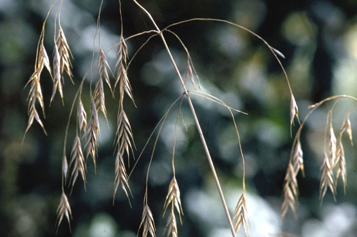
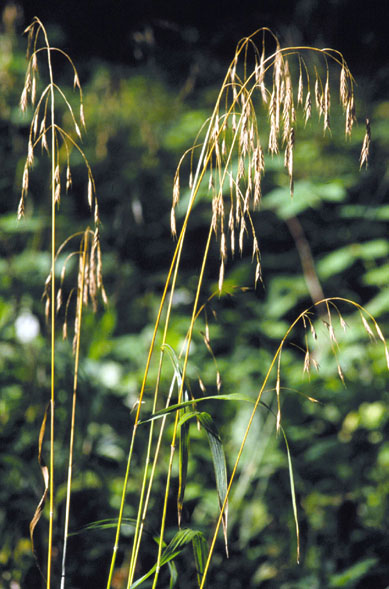
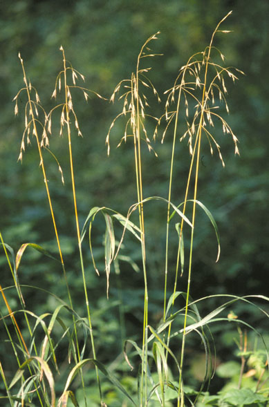

Bromus Pubescens
Family: Poaceae
Woodland Brome
Swink/Wilhelm #5


Click to view larger photo
FLOWERING: July - August
SEED TIMING: Late August through September
HABITAT: Closed canopy species growing with red and white oak as well as in mixed woods. Not rhizomatous. Plants appear as scattered individuals.
DIAGNOSTIC FEATURES: 2 to 4 feet high. Tall grass with nodding, very open, almost sparse panicles. Brome-like spikelets of interlocking, pubescent lemmas. Long-awned.
TO PICK: Light, tan spikelets pull off panicle easily when ripe. A soft stroke will tell you if they are ready. This is a short-lived grass. Pick sparingly.